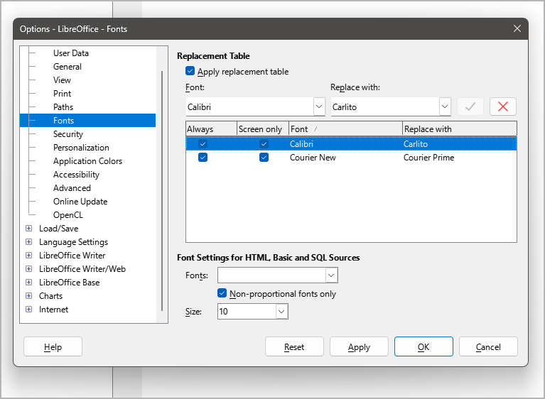

Preparations
Summary
In the following I will describe how to install novelibre. I also give some tips on setting up LibreOffice and OpenOffice to optimize the interaction with novelibre.
Setting up novelibre
Important
Before you can install novelibre on Linux, you must ensure that the prerequisites mentioned on the project home page are met. In particular, support for tkinter must be installed on your system. For Ubuntu, the package is called python3-tk for example, for Fedora it may be python3-tkinter. Installing the idle3 package is optional but recommended.
The actual installation of novelibre is simple and straightforward. The installation program automatically creates an installation directory, copies everything necessary into it, and generates a start file named run.pyw adapted for the respective computer, which must be called in order to execute novelibre.
The necessary manual work consists of linking this start file to the desktop and, if desired, assigning a program icon to the link. I will also show you how to set it up under Windows so that the novelibre project files have their own program icon and that the program application is started when you double-click on them.
Unfortunately, I cannot automate this with my simple means without causing problems with the security mechanisms of the operating system.
Installing the application
- Step 1
Either launch the downloaded novelibre_vx.x.x.pyz file by double-clicking (Windows/Linux desktop),

or execute
python novelibre_vx.x.x.pyz(Windows), resp.python3 novelibre_vx.x.x.pyz(Linux) on the command line.
“x.x.x” means the version number.
In both cases, a success message should appear.

Important
Many web browsers recognize the download as an executable file and offer to open it immedately. This allows you to start the installation conveniently.

However, depending on your security settings, your browser may initially refuse to download the executable file. In this case, your confirmation or an additional action is required. If this is not possible, you have the option of downloading the zip file.
Making novelibre accessible on the Desktop
Note for Linux users
The following steps describe the Windows procedure.
As a Linux user, you might want to set up a program launcher on your specific desktop. This is a matter of calling python3 with /home/your-username/.novx/run.pyw and an optionally specified file as parameters. You get a desktop icon to click on and to open your .novx project file via drag-and-drop.
With the XFCE desktop, for example, my launcher command is:
python3 /home/peter/.novx/run.pyw %F

You might have to copy the novelibre icons to a dedicated image directory where your program launcher gets the icons from. You also may want to set novelibre as standard application for files with the .novx extension, and assign them the novelibre logo as file icon. With the XFCE desktop, none of this was too difficult for me. In doubt, refer to your desktop documentation.
It’s a good idea to register the novx extension in the mimetypes as text/xml, so it can be opened with your web browser for display, using the novx.css style sheet.
- Step 2
Open the installation folder.

- Step 3
Drag and drop run.pyw to the desktop while holding down the
Altkey. This creates a shortcut to launch novelibre from the Windows desktop. Now you can also drag and drop .novx project files to this shortcut.
- Step 4
Optionally, you can replace the “Python” icon with the novelibre logo you may find in the installation’s icons subdirectory.
To do this, right-click on the desktop shortcut and open the Properties dialog. Select the Shortcut Tab and click on the Change icon button (1). In the icon selection dialog, click on the Browse… button (2). This opens a file selection dialog. Move to
<home>\.novx\iconsand double-click on the “N” logo (3).
- Step 5
To rename the shortcut to novelibre, right-click on the desktop shortcut and open the Properties dialog. In the first tab, replace “Shortcut to run.pyw” with “novelibre”.

Associating .novx files with novelibre
- Step 6
Optionally, you can associate the .novx file extension with the novelibre application. Then the project files are displayed with the novelibre icon in the Explorer, and you can open them with novelibre by double-click. Further, you can display .novx files with a web browser, using the novx.css style sheet.
Double-click on the add_novelibre.reg script. Windows will display a warning and ask you for confirmation. If in doubt, you can inspect the add_novelibre.reg file with a text editor or ask an expert you trust.
Hint
You can undo this by executing the remove_novelibre.reg script. This removes all the novelibre-specific entries from the Windows registry while keeping the application.
To uninstall the application and all its tools, plugins, and configuration data, just delete the
<home>\.novxfolder after executing the remove_novelibre.reg script.
Important
Executing the program under Windows by double-clicking on the .novx file works under the hood by calling the currently installed version of the Python interpreter.
If you update Python at a later date, you must then re-install novelibre afterwards, and execute add_novelibre.reg again. Otherwise, Windows will not be able to find the new Python version and will fail when trying to open .novx files on double-clicking.
Please keep that in mind, even if it’s pretty unlikely that novelibre will need a Python update in the near future.
Updating the application or a plugin
Just execute the first step as described above. If there is any further action required, the setup script will give you a message.
Setting up Writer
I assume that novelibre users are already familiar with LibreOffice or OpenOffice Writer. Therefore, I will only give a few brief tips that relate specifically to the interaction with novelibre.
Making the sections visible in the manuscript
An essential part of the workflow is writing with the Writer word processor. For this, novelibre creates editable manuscript files in the Open Document Text format that are meant to be temporary. These documents contain structural information that enables novelibre to recognize and correctly sort the sections when reading them back.
For the whole thing to work, it is extremely important that you only write within the section boundaries. To do this, you might want to make the section boundaries visible in the Writer settings.
The following picture shows a LibreOffice 7.6 screenshot. Make sure the Section boundaries box in the Tools > Options > Application Colors dialog is ticked. Writing outsides the visible section boundaries has no effect on your novelibre project.

Hint
With OpenOffice and older versions of LibreOffice the dialog may be called “Appearance” instead of “Application Colors”.
Customizing the look of your manuscript
The manuscript created by novelibre has a layout that is similar to the “standard manuscript format” which is widely used to provide an overview of the total number of pages of a work to be printed.
However, the set font “Courier New” is only available for Windows, and it is not particularly attractive (I, for my part, have installed the free Courier Prime font on Windows and Linux, which gives me a pleasant typewriter feel).
In addition, hyphenation is turned off, and the page size is set to A4, which is not the worldwide standard.
That’s not for you? No problem. This is what the document templates in Writer are for. So if you don’t like the look of the generated manuscript, simply apply a template that suits your needs and tastes. Perhaps you have to design your favorite template first, but your knowledge of this technique will pay off when it comes to designing print pages for self-publishing.
So if you have got a document template or a document with the styles you want to work with, novelibre can use them for export. For this, simply select the text document or the text document template in the export options.
Tip
If you just want to change the font without applying templates, you can achieve this by having LibreOffice replace it automatically. For this, open the Options dialog and go to Fonts. Tick the Apply replacement table checkbox. Then enter the fonts of your choice.
novelibre uses Courier New for text documents, and Calibri for spreadsheets. If you use LibreOffice on Linux, you might want to replace Calibri with Carlito to ensure optimal rendering of the exported tables.
Tip
If you prefer simple blank lines instead of the three-asterisks section separators in your final document, you can achieve this using “Find and replace”. This is particularly convenient with a macro that comes with the novelibre-tools extension.
Tip
For switching between different document templates in Writer, I recommend my Style switcher extension, that allows you to customize your manuscript with a single mouse click.
Loading a template or changing the default font and page size has no impact on reimporting the document with novelibre.